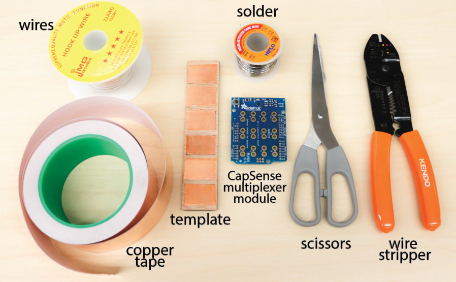

The MPR121 Adafruit shield allows us to use up to 12 capacitive touch sensors. Often, we only need to know if the sensor is "touched" or "not-touched." The shield and library can set an automatic threshold for any object. It is designed for alligator clips, but for this lab, we will solder the connections.
Checkoff 2: Show your instructor that you have wired 6 capacitive touch sensors!

#include <Wire.h>
#include "Adafruit_MPR121.h"
Adafruit_MPR121 cap = Adafruit_MPR121();
void setup() {
Serial.begin(9600);
if (!cap.begin(0x5A)) {
while(1); // Halt if MPR121 not found
}
Serial.println("MPR121 Initialized for 6 touch sensors.");
}
void loop() {
uint16_t touched = cap.touched();
for (uint8_t i = 0; i < 6; i++) {
if (touched & (1 << i)) {
Serial.print("Sensor ");
Serial.print(i+1);
Serial.println(" touched");
}
}
delay(50);
}